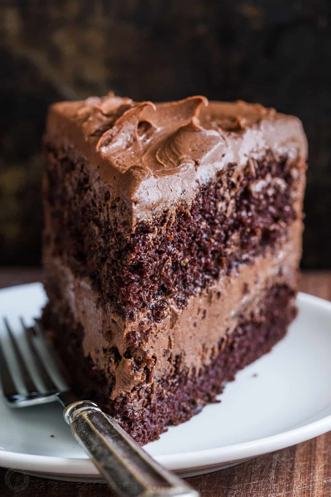

Cake : a step by step guide to make a chocolate cake

Description
with one bite of this decadent, moist chocolate cake with chocolate frosting, every single person around the table commented that this was the best chocolate cake they’d ever tasted.
Ingredients
- all-purpose flour
- sugar
- unsweetened cocoa powder
- baking powder
- baking soda
- salt
- espresso powder
- milk
- oil
- eggs
- vanilla extract
- boiling water
Instructions
- Prep
Preheat the oven to 350º F. Prepare two 9-inch cake pans by spraying with baking spray or buttering and lightly flouring.
- Whisk dry ingredients
Add flour, sugar, cocoa, baking powder, baking soda, salt and espresso powder to a large bowl or the bowl of a stand mixer. Whisk through to combine or, using your paddle attachment, stir through flour mixture until combined well.
- Mix in wet ingredients
Add milk, vegetable oil, eggs, and vanilla to flour mixture and mix together on medium speed until well combined. Reduce speed and carefully add boiling water to the cake batter until well combined.
- Bake
Distribute cake batter evenly between the two prepared cake pans. Bake for 30-35 minutes, until a toothpick or cake tester inserted in the center of the chocolate cake comes out clean.
- Frost
Remove from the oven and allow to cool for about 10 minutes, remove from the pan and cool completely. Frost with Chocolate Buttercream Frosting.